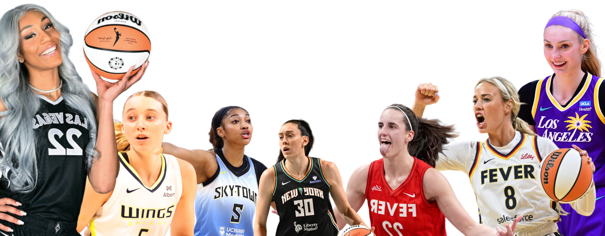
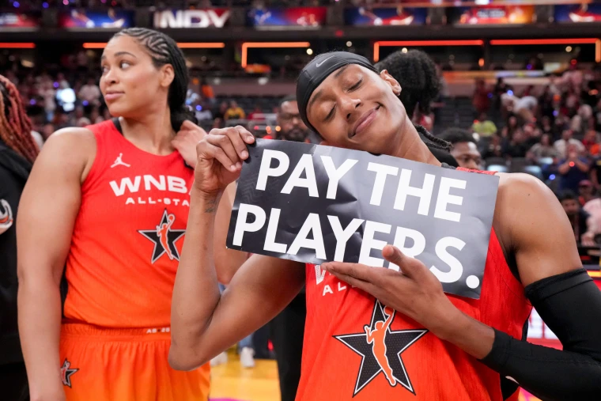
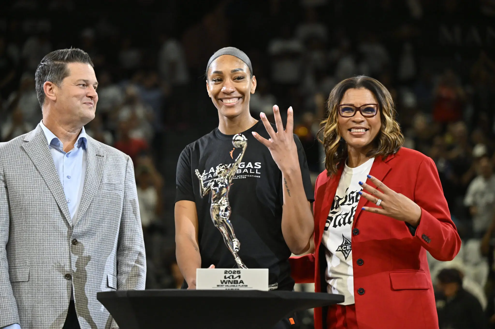
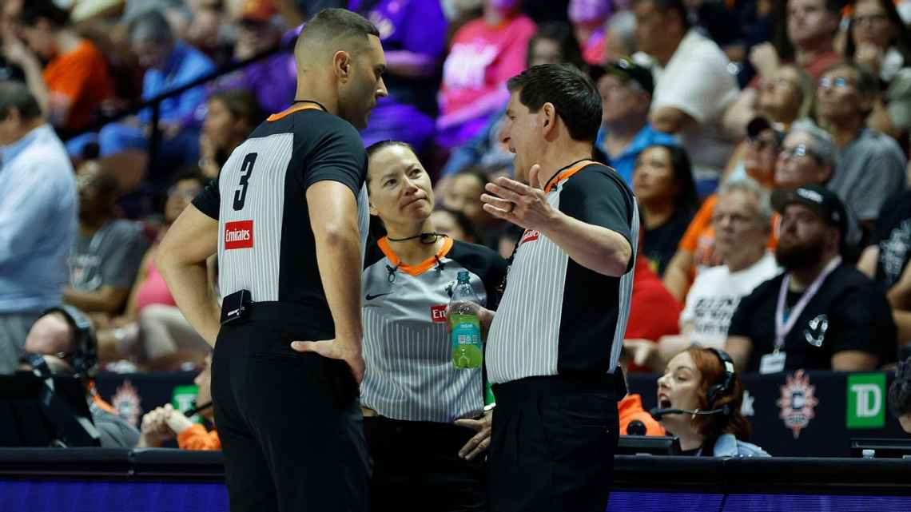

WNBA's CBA: 10 biggest wins from new agreement

Michael Voepel
Mar 26, 2026
It took many months of back-and-forth negotiating and one final push in a marathon weeklong bargaining session. But the WNBA and the players association accomplished their mutually stated goal of a "transformational" collective bargaining agreement that permanently and positively changes the landscape of the league.
This CBA will benefit WNBA players in the present, the future and even from the past. The current players are getting big raises in salary, a real stake in revenue share and an improved workplace experience. For future players, their compensation will be based on the framework of gains made now. And with what's called "recognition" payments, retired players -- those who built the WNBA, which is entering its 30th season -- will get cash payments if they have at least five years of service.
The official CBA hasn't been made public yet. But with a document produced by the union and acquired by ESPN, we have enough information on the CBA terms to weigh in on what appear to be "wins" for everyone involved.
The heated rhetoric of the bargaining table now can give way to labor "peace" for at least six years. (It's a seven-year deal with the potential of an opt-out after the 2031 season.) Here are the 10 biggest wins of the CBA that should be good not just for the players, but the product. Which in turn, helps the fans' enjoyment and the owners' bottom line.
ESPN.
1 Meaningful revenue sharing
Throughout the negotiations, revenue sharing was the biggest sticking point in getting a deal done. Why was it so important? Because it ties player compensation in a direct way to league growth. It's a measurable metric that allows players to feel fully vested in and rewarded by not just their own individual success but what the league as a whole accomplishes.
Getting 20% of gross revenue is lower than the players' original ask, but it's a number that they and the owners can feel comfortable about. The players can build on this in future CBAs. The owners want to make sure franchises are financially healthy to protect their investment.
While it took a while to get to this number, agreement here was imperative.

The Washington Mystics' Brittney Sykes holds a sign during the WNBA All-Star Game in Indianapolis on July 19. Grace Smith/IndyStar / IndyStar / USA TODAY Network file
2 Salaries that make sense
We've outlined how salary increases will grow for WNBA players at every level of experience and impact. This new salary scale doesn't just put more money in the players' pockets. It allows franchises more flexibility in how they build their teams. Some will have a bigger so-called "middle class" of players than others, based on how they choose to surround their most elite players.
These salaries also add a needed and justified level of prestige to the WNBA and its players. For 2026, salaries will range from a minimum of $270,000 to $1.4 million, with each team's cap at $7 million (compared to $1.5 million in 2025). That's not like the astronomical sums seen currently in the four major men's professional sports in the United States. But compare where the WNBA is now to where those leagues were at a similar age. That's a better measurement of the progress made in this CBA.
3 Codified charter travel
When the last CBA was signed in 2020, most would have assumed negotiating for charter flights would be a major issue for the next labor deal. Instead, the league went to charters in 2024, a big step forward regarding players' health, recovery and comfort. All of which can affect the quality of play. Plus, charters largely rid the WNBA of embarrassing travel-issue stories that seemed to crop up a few times every season and make the league seem amateurish.
Because of the travel change in 2024, charters became less of a bargaining chip for this CBA. But it was still an important step to officially make it part of the CBA.
4 Prioritizing health and wellness
This comprises multiple aspects of the CBA. We've mentioned charters and how that decreases wear-and-tear on athletes, who rely on rest and recovery.
Teams' medical staff requirements are mandated to be larger, including two athletic trainers, two team physicians, a strength and conditioning coach, a physical therapist, a massage therapist and access to a nutritionist. (Previously they were required to employ only an athletic trainer and a team physician.) In the event of injuries, players will be allowed to pursue a second opinion, if they want one, at the team's expense.
By 2027, players can be reimbursed for up to $2,250 per season in mental health expenses.
And by 2028, teams will have to meet minimum standards for practice facilities, which include private medical/treatment rooms.
Some franchises have been providing more than others in these areas. This CBA will make that standard practice for all of the teams.
5 Family-first commitments
The union and the WNBA have championed the needs and rights of mothers in the workplace, and this CBA goes further than any previous one in safeguarding those things. One new element is this: Teams must obtain her consent before trading a pregnant player.
After the 2022 season, the Las Vegas Aces and forward Dearica Hamby had a contentious parting when she was dealt to the Los Angeles Sparks. Hamby said she was traded because she was pregnant, while the Aces insisted she no longer fit into their plans from a personnel standpoint. Hamby filed suit against the Aces and the WNBA for what she thought was an inadequate investigation of the club's actions. A federal judge dismissed the suit against the league last May, and Hamby and the Aces mutually agreed to dismiss her lawsuit against the franchise last December.
Still, the dispute between Hamby and the Aces is not something the league or the union wants to see happen again. The new CBA looks to take away any potential ambiguity of a team making a trade involving a pregnant player by requiring player approval.
Teams also will be allowed greater flexibility with the cap in covering the mandated full salary for a pregnant player. That helps protect the player and the team.
Other family-focused parts of the CBA include a life insurance policy increase for players to $700,000 from $100,000, a requirement to allow dependent children ages 13 or younger to be allowed to travel with teams, and two weeks' paid leave for non-birthing parents.
6 Roster size guarantee
Injuries happen. Rest is necessary. Some players just need a little more time to grow into pro potential. Two key elements of the CBA address all of this.
Previously, teams were allowed to carry as many as 12 players, but they could have fewer players, especially as they navigated the salary cap. Now, 12 will be mandated. And up to two developmental players can be signed per team without that counting toward their roster or salary cap limits. The players can receive certain benefits and a stipend. They also can be activated for up to 12 games, being paid a pro-rated minimum salary for each game.
Even with expansion to 15 teams (18 by 2030), it is still difficult to make a roster. WNBA followers have often lamented the loss of young players who could have a future in the league but had a very narrow path at best to develop under the oversight of teams. Having developmental players lets franchises invest in future potential without it costing teams a roster spot.
7 Bigger rewards for performance
Players always want to give their best. But money is a powerful motivator for any professional, and the CBA recognizes this in two ways that stand out.
The first is increased performance bonuses for awards and achievements -- everything from being chosen the league MVP to being on the all-WNBA first and second teams, to getting a championship share for the league title. Across the board, the cash prizes for these achievements are doubling, tripling or more. The league has gotten bad publicity at times in the past for awards that seemed paltry or trophies that were too small. This addresses that.
Also, players on rookie contracts now have a way to capitalize on honors such as all-league by accelerating into the potential max salary range by their fourth season.

The four-time MVP will receive 20% of Las Vegas’s salary cap over three years. David Becker/NBAE via Getty Images
8 More officiating dialogue and transparency
Every sport has officiating complaints. In the postseason last year, the WNBA's officiating came under scrutiny when Minnesota Lynx coach Cheryl Reeve was ejected in Game 3 of the semifinals against the Phoenix Mercury. She then excoriated the league's officiating in her postgame news conference, drawing a suspension for Game 4 and a $15,000 fine. Las Vegas Aces coach Becky Hammon and Indiana Fever coach Stephanie White both got $1,000 fines for essentially agreeing with some of Reeve's assessments.
This CBA doesn't bring any groundbreaking changes in officiating. But it does include that the union will be given access to any informational, educational, and points-of-emphasis videos regarding officiating. And it requires three meetings per season between the league and the union specifically to review flagrant fouls and technical fouls.
If nothing else, it should give the players more of a sense that their input on officiating is being heard.

Like most professional sports leagues in the United States, controversial calls occur in the WNBA. The new CBA requires more information around officiating to be shared with the union. M. Anthony Nesmith/Icon Sportswire.
9 Core designation compromise
Every successful CBA requires some compromises from both sides. This is an example of an issue that both sides found middle ground on. The union might have wanted to get rid of the core designation -- the equivalent of the franchise tag in other sports -- entirely because it can delay some players' bargaining power and chance to move on.
This CBA didn't get rid of the core. However, it changed the parameters. Previously, players could be "cored" up to two times in their careers, regardless of how many years of service they had. Starting in 2027, only players with six or fewer years of service can be cored.
It protects teams' ability to hold onto their younger talent while still giving more experienced players the freedom to avoid being locked into a situation they may not want to be in.
10 Scheduling sensibility
The WNBA isn't just expanding with teams, but also with games.
By 2027, the league could have a 50-game regular season and by 2029, it could be 52 games.
That would mean playing into November.
But there's another element of scheduling that the union focused on, called "cadence." Players and coaches at times have raised concerns about things such as the number of games they've played in a certain time frame, or having to go on especially long road swings with no home games. Even with the great convenience of charter flights, some scheduling demands have seemed almost punitive.
The CBA will include more provisions about scheduling to try to address such issues. That might not solve all the cadence issues, but should put more safeguards into scheduling.